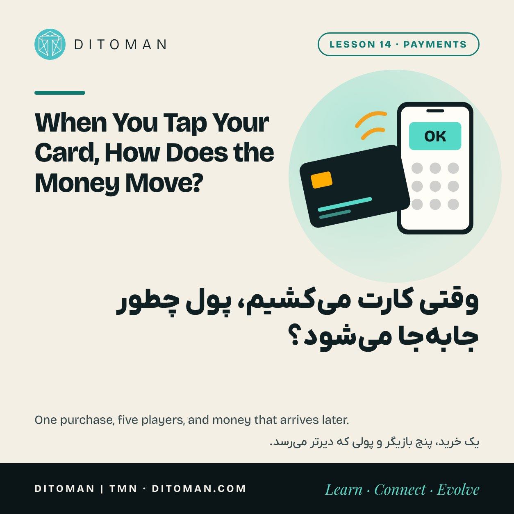

Quand vous présentez votre carte, comment l'argent circule-t-il ?
وقتی کارت میکشیم، پول چطور جابهجا میشود؟
Un paiement par carte semble instantané, mais plusieurs entreprises se parlent en ces deux secondes, et l'argent lui-même arrive plus tard. Cette leçon suit un achat du terminal jusqu'au compte du commerçant.
خرید با کارت آنی به نظر میرسد، ولی در همان دو ثانیه چند شرکت با هم حرف میزنند و خودِ پول دیرتر میرسد. این درس یک خرید را از کارتخوان تا حساب فروشنده دنبال میکند.
Contenu de la leçon
محتوای درس
Lisez la leçon en anglais ou en persan.
درس را به فارسی یا انگلیسی بخوانید.
Vous présentez votre carte au terminal, entendez un bip, prenez le ticket et partez. Deux secondes. On dirait que l'argent a sauté de votre compte au magasin.
Ce n'est pas le cas, du moins pas encore. Ce qui a voyagé pendant ces deux secondes, c'est une question et une réponse. L'argent suit plus tard. Voir la différence explique les frais, les remboursements, les paiements échoués et, plus loin dans cette série, pourquoi les paiements en crypto fonctionnent si différemment.
01. Les cinq acteurs
Chaque paiement par carte a la même distribution, quel que soit le pays.
Le titulaire de la carte : vous.
Le commerçant : le commerçant.
L'émetteur : votre banque, qui vous a donné la carte et détient votre compte.
L'acquéreur : la banque ou la société de paiement du commerçant, qui fournit le terminal et encaisse l'argent pour lui.
Le réseau : le système central qui relie toutes les banques entre elles et fixe les règles.
Dans la plupart des pays, le réseau est Visa ou Mastercard. En Iran, Shaparak relie les terminaux et les passerelles en ligne aux banques, et Shetab relie les banques entre elles.
02. Étape un : la demande (autorisation)
Quand vous présentez votre carte, le terminal envoie un message, via l'acquéreur et le réseau, à votre banque : cette carte, ce montant, ce commerçant. Est-ce bon ?
Votre banque vérifie que la carte est valide, que le code ou le sans-contact est correct, que le solde suffit et que rien ne ressemble à une fraude. Puis elle répond oui ou non. Si c'est oui, elle bloque le montant. Tout cela, c'est le bip.
- 1Vous présentez la carte. Le terminal lit la carte et le montant.
- 2L'acquéreur transmet la demande au réseau.
- 3Le réseau l'achemine à la banque qui a émis votre carte.
- 4Votre banque vérifie le solde, le code et les signaux de fraude, puis répond oui ou non.
- 5La réponse revient au terminal : le bip.
- 6Plus tard, les banques règlent et le compte du commerçant est crédité.
03. Étape deux : l'argent (compensation et règlement)
En fin de journée, les paiements approuvés sont rassemblés et totalisés. C'est la compensation: déterminer qui doit quoi à qui.
Vient ensuite règlement: les banques se paient réellement entre elles, généralement via des comptes à la banque centrale, et le compte du commerçant est crédité. Cela se fait souvent le jour ouvré suivant, parfois plus tard.
Le ticket du commerçant est donc une promesse que l'argent arrive. Pour le client, cela semble instantané. Pour le commerçant, non.
04. Qui paie tout cela ?
Les terminaux, les réseaux et les systèmes antifraude coûtent de l'argent. Dans la plupart des pays, le commerçant paie un petit pourcentage de chaque vente, et une partie de ces frais, appelée commission d'interchange, revient à la banque qui a émis la carte.
Le niveau varie beaucoup. L'Union européenne plafonne la commission d'interchange à 0,2 % pour les cartes de débit et 0,3 % pour les cartes de crédit. Sur d'autres marchés, les frais totaux peuvent atteindre deux ou trois pour cent. En Iran, le système a été inhabituel : pendant des années, les banques ont payé le coût et les commerçants ne payaient rien pour les achats par carte.
Quand un commerçant accorde une remise en espèces ou ajoute un supplément carte, ces frais en sont généralement la raison.
05. Pourquoi les paiements échouent ou reviennent parfois
Refusé : l'émetteur a répondu non, à cause du solde, des plafonds ou d'un contrôle anti-fraude.
Argent bloqué mais achat échoué : le blocage a été posé mais la réponse n'est jamais arrivée au terminal. Le blocage est levé plus tard, c'est pourquoi l'argent « revient » au bout d'un moment.
Remboursements et litiges : comme les banques sont au milieu, un paiement par carte peut être annulé. Cela protège les acheteurs. C'est aussi un coût et un risque pour les commerçants.
06. Comparaison avec la crypto
Un paiement par carte est une chaîne d'entreprises de confiance qui se passent des messages, avec un règlement plus tard. Un paiement sur blockchain n'a ni émetteur, ni acquéreur, ni réseau. Le transfert lui-même est le règlement et, une fois confirmé, aucune banque ne peut l'annuler.
Cela le rend rapide et ouvert à tous, mais supprime aussi le filet de sécurité. La leçon 16 suit une transaction crypto pas à pas de la même façon.
Ce qu'il faut en retenir
Le bip est la réponse à une question. L'argent bouge plus tard.
Cinq acteurs interviennent : porteur, commerçant, émetteur, acquéreur et réseau.
L'autorisation est instantanée. La compensation et le règlement prennent des heures ou des jours.
Quelqu'un paie toujours le système, généralement le commerçant, et les règles varient selon les pays.
Les paiements par carte peuvent être annulés. Les paiements sur blockchain, non. Chacun a un coût.
کارت را به کارتخوان نزدیک میکنیم، یک بوق میشنویم، رسید را میگیریم و میرویم. دو ثانیه. به نظر میرسد پول از حساب ما به حساب مغازه پریده است.
ولی هنوز این اتفاق نیفتاده. چیزی که در آن دو ثانیه جابهجا شد یک پرسش و یک پاسخ بود. خودِ پول بعداً میآید. دیدن این تفاوت، کارمزد، برگشت پول و تراکنش ناموفق را توضیح میدهد، و در ادامهی همین مجموعه نشان میدهد چرا پرداخت کریپتویی اینقدر متفاوت کار میکند.
۰۱. پنج بازیگر
هر پرداخت کارتی، در هر کشوری، همین بازیگران را دارد.
دارندهی کارت: خود ما.
فروشنده (پذیرنده): مغازه یا فروشگاه.
بانک صادرکننده: بانک ما که کارت را داده و حسابمان پیش اوست.
بانک پذیرنده: بانک یا شرکت پرداختِ مغازه که کارتخوان را میدهد و پول را برای فروشنده جمع میکند.
شبکه: سامانهای در میانه که همهی بانکها را به هم وصل میکند و قواعد را تعیین میکند.
در بیشتر دنیا این شبکه ویزا یا مسترکارت است. در ایران، شاپرک کارتخوانها و درگاههای اینترنتی را به بانکها وصل میکند و شتاب بانکها را به یکدیگر.
۰۲. قدم اول: پرسش (تأیید تراکنش)
وقتی کارت میکشیم، کارتخوان پیامی را از راه شرکت پرداخت و شبکه به بانک ما میفرستد: این کارت، این مبلغ، این فروشگاه. تأیید میکنی؟
بانک ما بررسی میکند که کارت معتبر باشد، رمز درست باشد، موجودی کافی باشد و نشانهای از تقلب نباشد. بعد جواب میدهد: بله یا نه. اگر جواب بله باشد، آن مبلغ را در حساب مسدود میکند. همهی اینها همان یک بوق است.
- ۱کارت میکشیم. کارتخوان کارت و مبلغ را میخواند.
- ۲شرکت پرداختِ فروشنده درخواست را به شبکه میدهد.
- ۳شبکه آن را به بانک صادرکنندهی کارت میرساند.
- ۴بانک ما موجودی، رمز و نشانههای تقلب را بررسی میکند و جواب بله یا نه میدهد.
- ۵پاسخ به کارتخوان برمیگردد: همان بوق.
- ۶بعداً بانکها تسویه میکنند و پول به حساب فروشنده مینشیند.
۰۳. قدم دوم: پول (پایاپای و تسویه)
آخر روز، پرداختهای تأییدشده جمع و حساب میشوند. به این کار پایاپای میگویند: معلوم میشود چه کسی به چه کسی چقدر بدهکار است.
بعد نوبت تسویه است: بانکها واقعاً به هم پول میدهند، معمولاً از راه حسابهایشان نزد بانک مرکزی، و پول به حساب فروشنده مینشیند. این کار اغلب روز کاری بعد انجام میشود و گاهی دیرتر.
پس رسید فروشنده قولی است که پول در راه است. برای خریدار آنی به نظر میرسد. برای فروشنده اینطور نیست.
۰۴. هزینهی این همه را چه کسی میدهد؟
کارتخوان، شبکه و سامانههای ضدتقلب هزینه دارند. در بیشتر کشورها فروشنده درصد کمی از هر فروش را میپردازد و بخشی از آن کارمزد، به بانکی میرسد که کارت را صادر کرده است.
اندازهی این کارمزد خیلی فرق میکند. اتحادیهی اروپا سقف آن را برای کارت نقدی ۰٫۲ درصد و برای کارت اعتباری ۰٫۳ درصد گذاشته است. در بازارهای دیگر کل کارمزد میتواند دو یا سه درصد باشد. در ایران وضع متفاوت بوده: سالها این هزینه را بانکها میپرداختند و فروشنده برای خرید کارتی چیزی نمیداد.
وقتی فروشگاهی برای پرداخت نقدی تخفیف میدهد یا برای کارت مبلغی اضافه میگیرد، دلیلش معمولاً همین کارمزد است.
۰۵. چرا پرداخت گاهی ناموفق میشود یا پول برمیگردد
رد شدن: بانک صادرکننده جواب «نه» داده؛ بهخاطر موجودی، سقف تراکنش یا بررسی تقلب.
پول کم شد ولی خرید انجام نشد: مبلغ مسدود شده ولی پاسخ به کارتخوان نرسیده است. این مبلغ بعداً آزاد میشود و برای همین پول «بعد از مدتی برمیگردد».
برگشت پول و اعتراض: چون بانکها در میانهاند، پرداخت کارتی را میشود برگرداند. این از خریدار محافظت میکند و برای فروشنده هزینه و ریسک دارد.
۰۶. مقایسه با کریپتو
پرداخت کارتی زنجیرهای از شرکتهای مورد اعتماد است که به هم پیام میدهند و تسویه بعداً انجام میشود. در پرداخت روی بلاکچین، بانک صادرکننده، شرکت پرداخت و شرکت شبکهای وجود ندارد. خودِ انتقال همان تسویه است و بعد از تأیید، هیچ بانکی نمیتواند آن را برگرداند.
این آن را سریع و برای همه در دسترس میکند و همزمان تور ایمنی را هم برمیدارد. درس ۱۶ یک تراکنش کریپتویی را به همین شکل قدمبهقدم دنبال میکند.
چه برداشتی کنیم
آن بوق، پاسخ به یک پرسش است. پول بعداً جابهجا میشود.
پنج بازیگر در کارند: دارندهی کارت، فروشنده، بانک صادرکننده، بانک پذیرنده و شبکه.
تأیید آنی است. پایاپای و تسویه چند ساعت یا چند روز طول میکشد.
همیشه کسی هزینهی این سامانه را میدهد، معمولاً فروشنده، و قواعدش در هر کشور فرق دارد.
پرداخت کارتی را میشود برگرداند. پرداخت روی بلاکچین را نمیشود. هر کدام هزینهای دارد.
La même question, de l'autre côté d'une frontière
همین پرسش، آن طرف مرز
Dans un pays, le réseau relie toutes les banques. Entre pays, il n'existe pas de réseau unique, et c'est là que commencent le coût et le retard. La leçon 15 suit un paiement vers l'étranger.
داخل یک کشور، شبکه همهی بانکها را به هم وصل میکند. میان کشورها شبکهی واحدی نیست و هزینه و تأخیر از همانجا شروع میشود. درس ۱۵ یک پرداخت به خارج را دنبال میکند.
Notions clés
مفاهیم کلیدی
- Porteur de carte et commerçant
- Émetteur
- Acquéreur
- Réseau de cartes
- Autorisation
- Compensation
- Règlement
- Commission d'interchange
- Rétrofacturation
- دارندهی کارت و فروشنده
- بانک صادرکننده
- بانک پذیرنده
- شبکهی کارت
- تأیید تراکنش
- پایاپای
- تسویه
- کارمزد
- برگشت پرداخت
Objectifs d'apprentissage
اهداف یادگیری
- Citez les cinq acteurs d'un paiement par carte et le rôle de chacun.
- Expliquez la différence entre autorisation et règlement.
- Dire pourquoi un commerçant reçoit son argent plus tard que le client ne le pense.
- Expliquez qui paie généralement les frais de carte et pourquoi ils varient selon les pays.
- Comparez un paiement par carte réversible à un paiement définitif sur blockchain.
- پنج بازیگر یک پرداخت کارتی و کار هر کدام را نام ببرید.
- تفاوت تأیید تراکنش و تسویه را توضیح دهید.
- بگویید چرا پول دیرتر از آنچه خریدار فکر میکند به فروشنده میرسد.
- توضیح دهید کارمزد کارت را معمولاً چه کسی میدهد و چرا در هر کشور فرق دارد.
- پرداخت کارتیِ برگشتپذیر را با پرداخت قطعی روی بلاکچین مقایسه کنید.
Quiz
آزمونک
Voyez ce que vous avez retenu. La réponse est sous chaque question.
ببین چه چیزی در ذهنت مانده. پاسخ زیر هر پرسش آمده است.
Question 1
پرسش ۱
Que se passe-t-il vraiment dans les deux secondes avant le bip ?
در دو ثانیهی پیش از بوق، واقعاً چه اتفاقی میافتد؟
A. L'argent passe sur le compte du commerçant
الف. پول به حساب فروشنده میرود
B. Votre banque répond à une demande et bloque le montant
ب. بانک ما به یک درخواست جواب میدهد و مبلغ را مسدود میکند
C. La banque centrale imprime un reçu
ج. بانک مرکزی رسید صادر میکند
Bonne réponse : B
پاسخ درست: ب
Question 2
پرسش ۲
Quelle banque a émis votre carte et détient votre compte ?
کدام بانک کارت شما را داده و حسابتان پیش اوست؟
A. L'émetteur
الف. بانک صادرکننده
B. L'acquéreur
ب. بانک پذیرنده
C. Le réseau
ج. شبکه
Bonne réponse : A
پاسخ درست: الف
Question 3
پرسش ۳
Qu'est-ce que le règlement ?
تسویه چیست؟
A. La vérification du code PIN
الف. بررسی رمز کارت
B. Imprimer le ticket
ب. چاپ رسید
C. Les banques qui se paient réellement entre elles
ج. پرداخت واقعی بانکها به یکدیگر
Bonne réponse : C
پاسخ درست: ج
Question 4
پرسش ۴
Le montant a quitté votre solde mais l'achat a échoué. Que s'est-il probablement passé ?
مبلغ از موجودی کم شد ولی خرید انجام نشد. به احتمال زیاد چه شده؟
A. Le commerçant a pris l'argent
الف. فروشنده پول را برداشته
B. Une réservation a été faite et sera levée
ب. مبلغ مسدود شده و بعداً آزاد میشود
C. La carte est annulée
ج. کارت باطل شده
Bonne réponse : B
پاسخ درست: ب
Question 5
پرسش ۵
En quoi un paiement confirmé sur blockchain diffère-t-il d'un paiement par carte ?
پرداخت تأییدشده روی بلاکچین چه فرقی با پرداخت کارتی دارد؟
A. Une banque peut l'annuler
الف. بانک میتواند آن را برگرداند
B. Elle est définitive et aucune banque ne peut l'annuler
ب. قطعی است و هیچ بانکی نمیتواند آن را برگرداند
C. Il coûte toujours trois pour cent
ج. همیشه سه درصد کارمزد دارد
Bonne réponse : B
پاسخ درست: ب
Sources
منابع
- Règlement (UE) 2015/751 relatif aux commissions d'interchange pour les opérations de paiement liées à une carte
- BIS CPMI : glossaire des paiements et des infrastructures de marché
- Shaparak : le réseau iranien de paiement électronique par carte
- Mehr News : les frais de paiement par carte en Iran et qui les a payés
Les niveaux et règles des frais changent. Les chiffres décrivent la structure générale, pas un tarif d'un commerce ou d'une banque.
اندازهی کارمزدها و قواعد تغییر میکند. عددهای این درس ساختار کلی را نشان میدهند، نه نرخ یک فروشگاه یا بانک مشخص را.
با هم دنبال میکنیمSuivez-nous
Les nouvelles leçons sont d'abord annoncées sur les canaux de Ditoman.
درسهای تازه اول در کانالهای دیتومان معرفی میشوند.